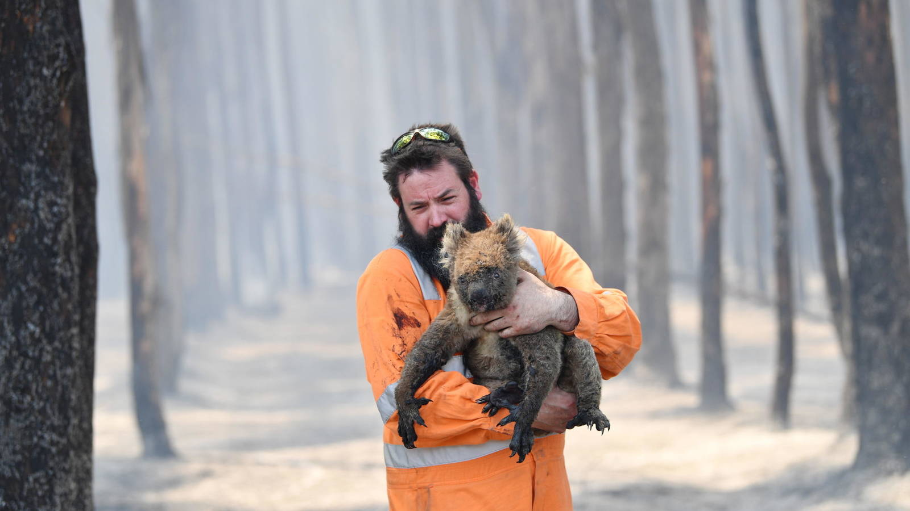

|
¿Por qué no tratamos estos riesgos catastróficos con la gravedad que merecen?
Wiener tiene algunas sugerencias. Él describe la forma en que la gente percibe erróneamente los riesgos catastróficos extremos como "tragedias de lo poco común".
Probablemente hayas oído hablar de la tragedia de los comunes: describe la forma en que las personas interesadas en sí mismos administran mal un recurso comunal.
Cada uno hace lo mejor para sí mismo, pero todos terminan sufriendo. Es la base del cambio climático, la deforestación o la sobrepesca.
Una tragedia de lo "poco común" es diferente, explica Wiener. En lugar de que las personas administren mal un recurso compartido, aquí la gente está percibiendo mal un riesgo catastrófico poco común.
Él propone tres razones por las que esto sucede:
La primera es la "falta de disponibilidad" de catástrofes raras.
Los acontecimientos recientes y destacados son más fáciles de recordar que los acontecimientos que nunca sucedieron.
El cerebro tiende a construir el futuro con un collage de recuerdos sobre el pasado. Si un riesgo encabeza las noticias (terrorismo, por ejemplo), aumenta la preocupación pública, los políticos actúan, se inventa la tecnología, etc.
Sin embargo, la dificultad especial de prever las tragedias de los infrecuentes es que es imposible aprender de la experiencia. Nunca aparecen en los titulares. Pero una vez que suceden, se acabó el juego.
La segunda razón por la que percibimos mal las catástrofes muy raras es el efecto "adormecedor" de un desastre masivo.
Los psicólogos observan que la preocupación de la gente no crece linealmente con la gravedad de una catástrofe.
O para decirlo más simple, si preguntas a las personas cuánto les importa que mueran todas las personas en la Tierra, no es 7.500 millones de veces más preocupante que si les dijeras que una persona moriría. Tampoco consideran las vidas de las generaciones futuras perdidas.
En grandes cantidades, hay cierta evidencia de que la preocupación de las personas incluso disminuye en relación con sus preocupaciones sobre la tragedia individual.
En un artículo reciente para BBC Future, la periodista Tiffanie Wen cita a la Madre Teresa, quien dijo: "Si miro a la masa, nunca actuaré. Si miro a uno, lo haré".
Finalmente, Wiener describe un efecto de "subestimación" que fomenta una actitud de no actuar entre quienes toman los riesgos, porque no hay responsabilidad.
Si el mundo se acaba debido a tus decisiones, entonces no puedes ser demandado por negligencia. Las leyes y reglas no tienen poder para disuadir la imprudencia de acabar con las especies.
|

|